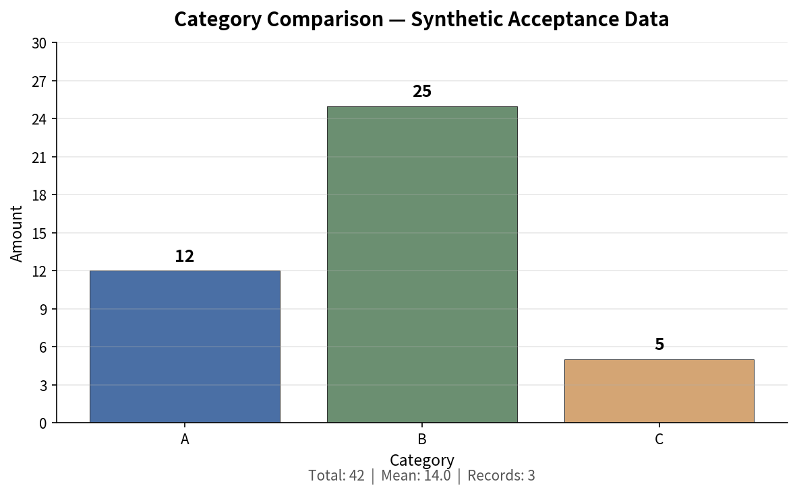

Computed statistics and category comparison from the supplied acceptance CSV fixture.
Synthetic DataThis report analyzes the synthetic-html-acceptance.csv file delivered as a test fixture. The dataset contains 3 records across three categories (A, B, C) with numeric amount values. All computations were performed natively from the actual file — no data was invented or substituted.
Important: This is explicitly synthetic acceptance data, not real business data. The observations have no financial, operational, or real-world interpretation. They exist solely for report pipeline validation and acceptance testing.

Figure 1: Amount by category — sorted A, B, C. Neutral palette (non-financial synthetic data).
| Category | Amount | Record Count |
|---|
Inspect the original row values from the acceptance CSV. Use the button below to reveal or conceal the raw data.
| # | Category | Amount |
|---|
File: input/data/0/synthetic-html-acceptance.csv
Nature of data: All observations in this report are derived from a synthetic test fixture. The CSV was generated for acceptance testing of the reporting pipeline. No real-world business, financial, or operational data is represented. Statistics (count, total, mean) are computed directly from the file and must not be interpreted as meaningful business metrics.
Limitations: The dataset contains only 3 records across 3 categories with integer amounts. No temporal dimension, no statistical significance, and no extrapolation is warranted. The category comparison visualization uses a neutral color palette because the data is non-financial and the "auto" style profile resolves to neutral conventions for synthetic fixtures.